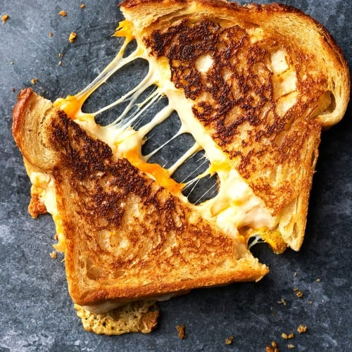

Grilled Cheese
Home

Description
A grilled cheese is a simple yet satisfying sandwich made
with cheese between two slices of bread, cooked in a pan until the bread
is golden brown and the cheese is melted and gooey.
Ingredients
- 2 slices of bread
- 2 Slices of your favorite Cheese
- A dash of Chili Flakes
- A touch of butter
Steps
- Apply the butter to one side of each slice of bread
- Place each slice in the pan on medium heat buttered side down
- After 2 minutes put the cheese on one slice of bread with some chili flakes then place the other slice of bread
on top of it, toasted side outward
- Flip when one side is golden brown
- Remove when other side is golden brown
- Enjoy!